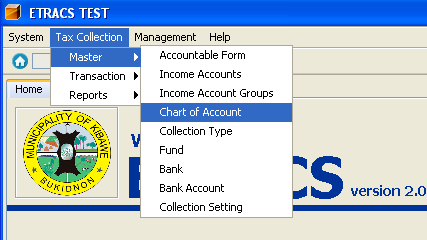
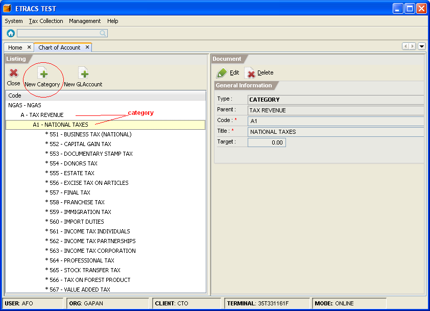
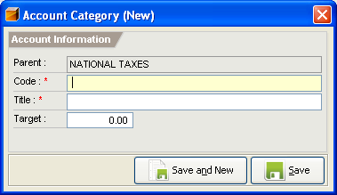

Managing Chart of Accounts
This facility enables you to add general ledger account and its category. It also allows you to
edit the general ledger accounts information
How to create a category?
1. On the menu toolbar, go to "Tax Collection -> Master -> Chart of Account" item.

2. Double click on the category to expand. Select a category, and click on the "New Category" button.

3. Fill in the account information.

4. Click on the "Save and New" button or "Save" button.